Lecture 14 — Part 5.2 Generative Models (ต่อ)
Lesson 13 มีวิธีสร้างรูปสองแบบ VAE ให้รูปหลากหลายแต่เบลอ GAN ให้รูปคมแต่ฝึกยากและมักได้รูปซ้ำๆ บทนี้เป็นแบบที่สาม คือ diffusion model ซึ่งได้ทั้งรูปคมและรูปหลากหลาย แลกกับการสร้างรูปที่ช้าลง วิธีของมันคือสอนโมเดลให้ "ล้าง noise" ทีละนิด แล้วสร้างรูปโดยเริ่มจาก noise ล้วนๆ ครึ่งหลังของบทนำ diffusion ไปทำใน latent space ของ VAE และใช้ข้อความคุมผลลัพธ์ ซึ่งก็คือ Stable Diffusion
| โมเดล | คุณภาพ (Quality) | ความหลากหลาย (Diversity) | ความเร็ว (Speed) |
|---|---|---|---|
| VAE | ไม่ดี | ดี | เร็ว |
| GAN | ดี | ไม่ดี | เร็ว |
| Diffusion | ดี | ดี | ช้า |
ตารางนี้เทียบสามโมเดล แต่ละโมเดลเด่นสองด้านและแพ้หนึ่งด้าน diffusion แพ้ด้านความเร็ว เพราะสร้างรูปหนึ่งรูปต้องรัน network ซ้ำหลายสิบรอบ ส่วน VAE และ GAN รันครั้งเดียว บทนี้อ่านตามลำดับ: ตอน 2 การเติม noise · ตอน 3 การฝึกให้ทาย noise · ตอน 4 U-Net · ตอน 5 การสร้างรูป · ตอน 6 Stable Diffusion
หยดหมึกลงในแก้วน้ำ หมึกค่อยๆ กระจายจนน้ำทั้งแก้วเป็นสีเดียว ไม่เหลือรูปร่างของหยดหมึกเดิม ถ้าถ่ายวิดีโอไว้แล้วเล่นย้อนกลับ จะเห็นหมึกรวมตัวกลับเป็นหยด diffusion model เรียนรู้การ "เล่นย้อนกลับ" นี้ทีละเฟรม
Diffusion model เป็น generative model คือออกแบบมาสร้างข้อมูลใหม่ที่คล้ายข้อมูลที่เคยเห็นตอน train ร่วมกับ GAN มันมีอิทธิพลมากในงานสร้างรูป และในทศวรรษที่ผ่านมากลายเป็นหนึ่งใน เทคนิคที่ส่งผลมากที่สุด ปัจจุบันทำได้ดีกว่า GAN ที่เคยเป็น state-of-the-art ในหลาย benchmark
Denoising Diffusion Model (DDM) มาจาก งานวิจัยที่ถือเป็นจุดเปลี่ยนในปี 2020 เริ่มจากรูปใน training set โมเดล ค่อยๆ เติม noise จนกลายเป็นรูป noise ที่ไม่เหลือลักษณะเดิม แล้วโมเดลถูกออกแบบให้ ลบ noise ออกจากรูป ทีละขั้นเล็กๆ จนได้รูปที่เหมือน training set
| ขั้น | ทำอะไร | เรียนรู้ได้ไหม |
|---|---|---|
| Forward diffusion | เติม noise ลงในข้อมูล T ขั้น | ไม่ได้ เป็นสูตรตายตัว |
| Reverse diffusion | ลบ noise ทีละขั้นเพื่อกู้ข้อมูลเดิม | ได้ เป็น neural network ที่ train |
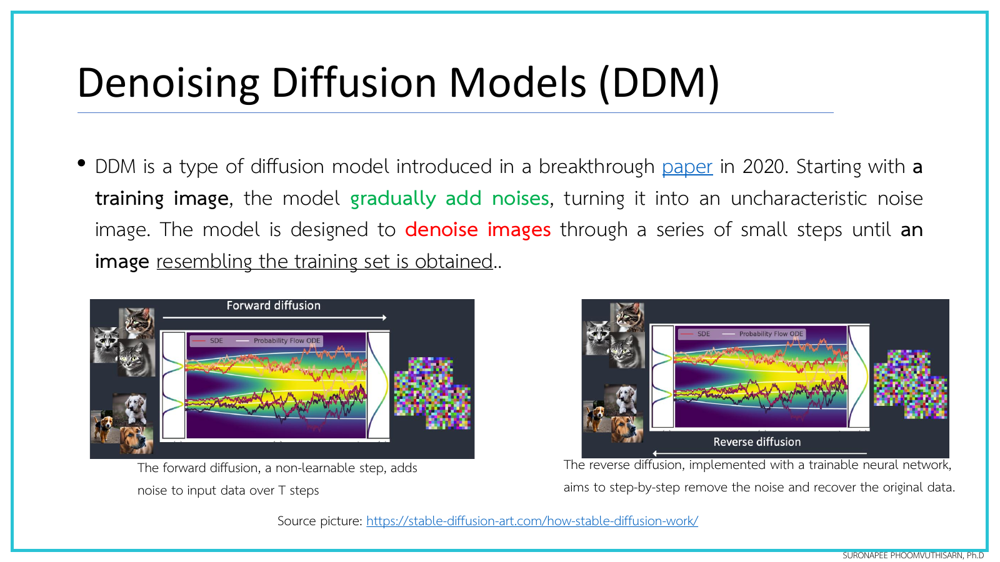
รูปแมวและหมาด้านซ้ายถูกเติม noise ไปเรื่อยๆ จนเป็นภาพจุดสีสุ่มด้านขวา reverse diffusion เดินทางกลับจากจุดสีสุ่มไปเป็นรูปสัตว์ ส่วนที่ต้องฝึกมีแค่ทางกลับ ทางไปเป็นสูตรที่คำนวณได้เลย
ข้อสอบมักถามว่าส่วนไหนของ diffusion model มี parameter ที่เรียนรู้ คำตอบคือ reverse process เท่านั้น forward process เติม noise ตาม schedule ที่กำหนดไว้ก่อน ไม่มีอะไรให้เรียน
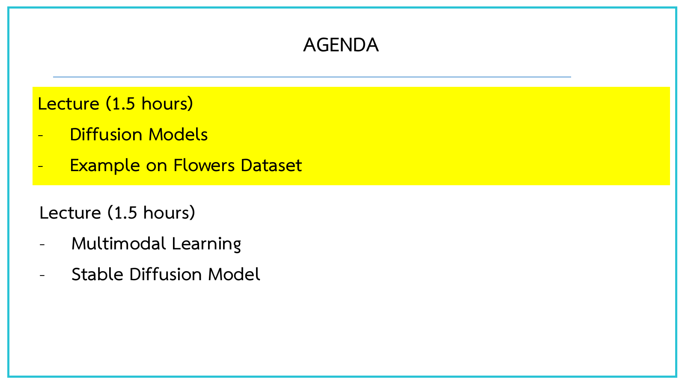
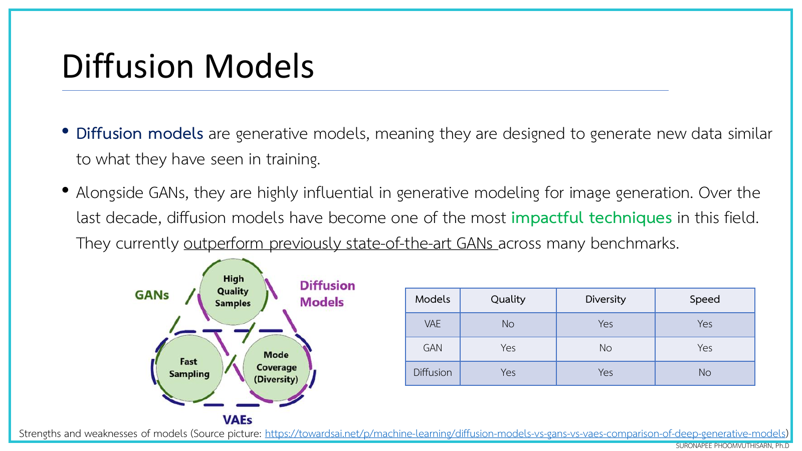
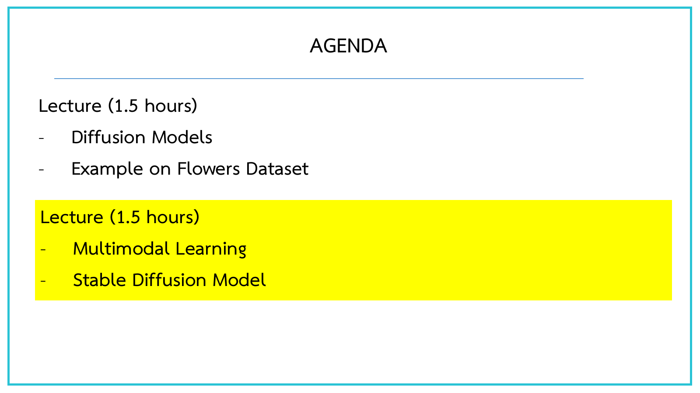
สีในสมการของตอนนี้: สีฟ้า คือ noise ที่สุ่ม (ε) · สีส้ม คือค่าที่ตั้งไว้ใน schedule (β, α)
ผสมสีทีละช้อน: ทุกครั้งตักสีเดิมออกนิดหนึ่ง แล้วเติมสีเทาลงไปเท่ากับที่ตักออก ปริมาณในถ้วยจึงเท่าเดิมเสมอ แต่ทำซ้ำหลายร้อยครั้ง ในถ้วยก็เหลือแต่สีเทา
Forward diffusion คือ ค่อยๆ เติม noise ลงในรูปเป็นจำนวนขั้นมาก (T ขั้น) จนแยกไม่ออกจาก Gaussian noise มาตรฐาน ที่มี mean 0 และ variance 1 ฟังก์ชัน q เติม Gaussian noise ที่มี variance \(\beta_t\) (ค่าระหว่าง 0 ถึง 1) ลงในรูป \(x_{t-1}\) เพื่อสร้างรูปใหม่ \(x_t\)
รูปขั้นใหม่ = รูปขั้นก่อนที่ถูกลดลงนิดหนึ่ง + noise ใหม่ก้อนเล็กๆ β คุมทั้งสองส่วน: ยิ่ง β ใหญ่ รูปเดิมเหลือน้อยและ noise ใหม่มาก
| \(x_t\) | รูปหลังเติม noise ไป t ขั้น (\(x_0\) คือรูปจริง, \(x_T\) คือ noise ล้วน) |
| \(\net{\beta_t}\) | variance ของ noise ที่เติมในขั้น t กำหนดไว้ล่วงหน้าโดย schedule |
| \(\rnd{\varepsilon_{t-1}}\) | noise สุ่มจาก normal มาตรฐาน ขนาดเท่ารูป |
ให้ β = 0.36 จะได้ \(\sqrt{1-0.36}=0.8\) และ \(\sqrt{0.36}=0.6\) ถ้าพิกเซลหนึ่งของ \(x_{t-1}\) มีค่า 1 และสุ่มได้ ε = −0.5 จะได้ \(x_t = 0.8(1) + 0.6(-0.5) = 0.8 − 0.3 = 0.5\) (β จริงในโมเดลเล็กกว่านี้มาก เช่น 0.0001 ถึง 0.02 ตัวเลขนี้เลือกให้คิดง่าย)
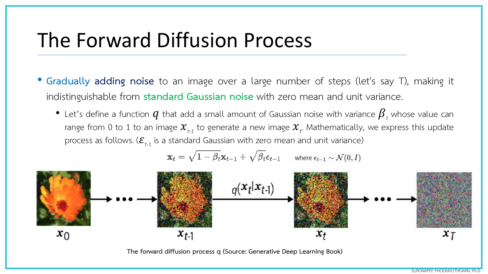
รูปดอกไม้ \(x_0\) ผ่าน q ทีละขั้น ช่วงกลาง (\(x_{t-1}\), \(x_t\)) ยังเห็นรูปดอกไม้ปนจุดสี เมื่อถึง \(x_T\) เหลือเพียงจุดสีสุ่มทั้งรูป
เหตุผลมีสามขั้น โดยใช้กฎของ variance สองข้อ คือ \(\mathrm{Var}(aX)=a^2\,\mathrm{Var}(X)\) และ variance ของผลบวกตัวแปรที่เป็นอิสระกันเท่ากับผลบวกของ variance
| ลองเขียน | variance ของ x_t (ถ้า Var(x_{t−1}) = 1) | ปัญหา |
|---|---|---|
| \(x_t=x_{t-1}+\varepsilon\) | 1 + 1 = 2 | เติม noise มากเกินในขั้นเดียว คุมปริมาณไม่ได้ |
| \(x_t=x_{t-1}+\sqrt{\beta_t}\,\varepsilon\) | 1 + β | คุมปริมาณได้ แต่ variance เพิ่มทุกขั้น ไม่เข้าใกล้ N(0, 1) |
| \(x_t=a\,x_{t-1}+\sqrt{\beta_t}\,\varepsilon\) | a² + β | ตั้ง a² + β = 1 ได้ \(a=\sqrt{1-\beta_t}\) variance คงที่ 1 |
ทำไมใช้ \(\sqrt{\beta_t}\) ไม่ใช่ \(\beta_t\): เพราะ \(\beta_t\) คือ variance ไม่ใช่ standard deviation ε มี variance 1 ดังนั้น \(\mathrm{Var}(\sqrt{\beta_t}\,\varepsilon)=(\sqrt{\beta_t})^2\cdot 1=\beta_t\) พอดี ถ้าคูณด้วย β ตรงๆ จะได้ variance เป็น β² ซึ่งเล็กกว่าที่ตั้งใจ
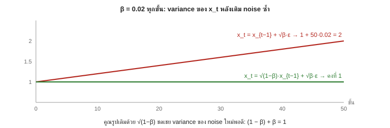
β = 0.02 ทุกขั้น ถ้าบวก noise เฉยๆ variance เพิ่มขั้นละ 0.02 หลัง 50 ขั้นจึงเป็น 1 + 50 × 0.02 = 2 ถ้าคูณรูปเดิมด้วย √0.98 ก่อน variance ที่หายไป (0.02) เท่ากับ variance ของ noise ใหม่พอดี จึงคงที่ 1 ตลอด (ตรวจด้วยการจำลองตัวเลขสุ่ม 200,000 ค่าได้ 1.000 และ 2.014)
สมการนี้เรียกว่า variance-preserving และรองรับ เป้าหมายสองข้อที่เกี่ยวกัน ของ forward process
| เป้าหมาย | เพราะ |
|---|---|
| ค่อยๆ ทำลายข้อมูลของรูปเดิม จนขั้นสุดท้ายไม่ขึ้นกับ \(x_0\) อย่างมีความหมาย | รูปเดิมถูกคูณด้วย √(1−β) ซ้ำทุกขั้นจนเหลือน้อยมาก |
| ให้การแจกแจงสุดท้ายใกล้ N(0, I) | reverse process จะได้เริ่มจาก Gaussian noise ที่สุ่มได้ง่าย |
variance-preserving ไม่ได้บังคับว่ารูปทุกรูปต้องมีพิกเซล variance = 1 ทุกขั้น ความหมายจริงคือมันนิยาม stochastic process ที่การแจกแจงค่อยๆ เข้าใกล้ Gaussian มาตรฐาน และในโค้ดรูปถูก normalize ให้ mean 0 variance 1 ก่อนเติม noise เพื่อให้สมมติฐาน "Var(x₀) = 1" ใช้ได้
รูปเดิมคูณ √(1 − 0.19) = √0.81 = 0.9 noise ใหม่คูณ √0.19 ≈ 0.436 ตรวจ: 0.81 + 0.19 = 1
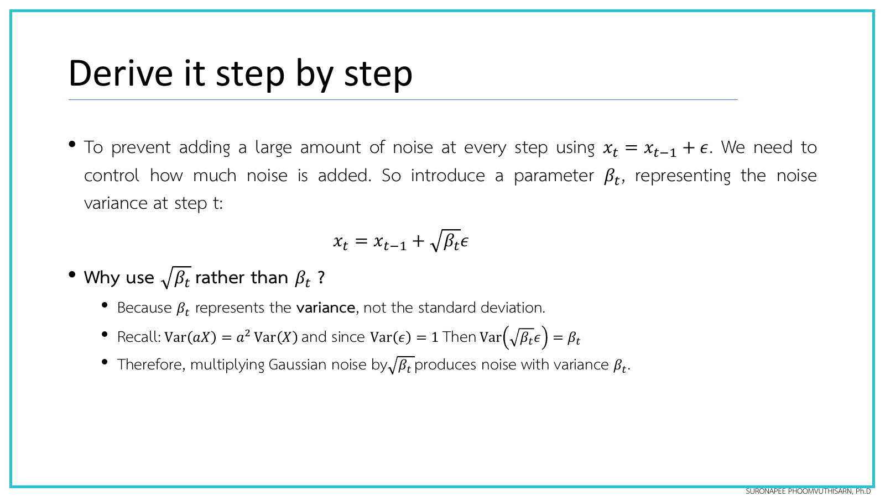
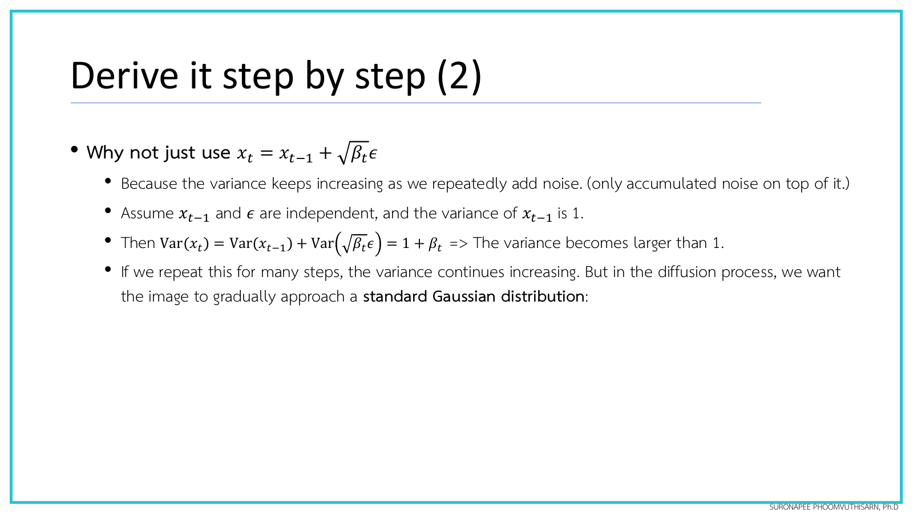
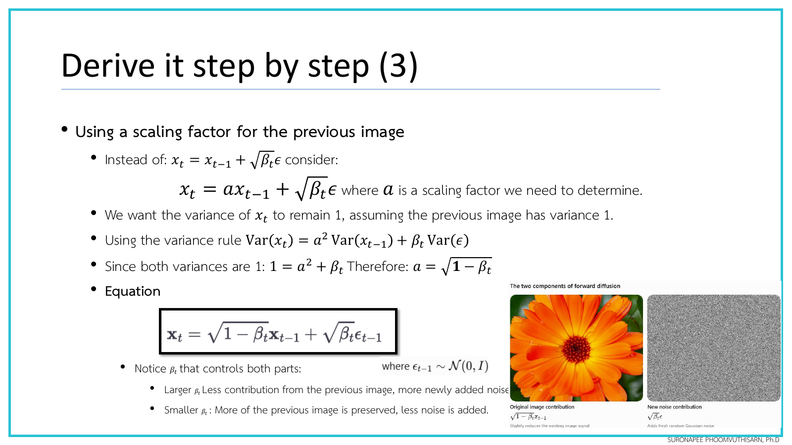
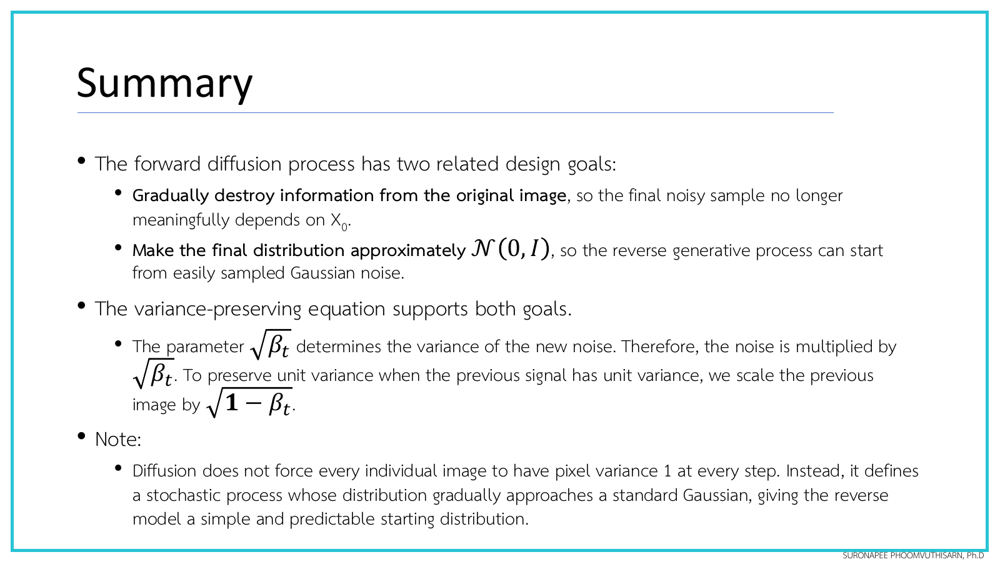
ฝากเงินดอกเบี้ยทบต้นปีละ 5% ไม่ต้องคิดทีละปีถึงจะรู้ยอดปีที่ 10 คูณ 1.05 สิบครั้งรวดเดียวก็ได้ forward diffusion ก็เช่นกัน ส่วนของรูปเดิมที่เหลือคือผลคูณของทุกขั้น
ถ้าต้องเติม noise ทีละขั้นจนถึงขั้นที่ t การ train จะช้ามาก reparameterization trick ทำให้ไปถึง รูปที่เติม noise แล้ว ได้ อย่างรวดเร็ว โดยนิยาม
ᾱ คือสัดส่วน variance ของรูปเดิมที่ยังเหลือหลัง t ขั้น ได้จากการคูณ α ของทุกขั้น ส่วนที่เหลือ 1 − ᾱ เป็น noise ทั้งหมด
ที่มาคือแทน \(x_{t-1}\) ลงในสมการของ \(x_t\) จะได้ noise สองก้อน คือ \(\sqrt{\alpha_t(1-\alpha_{t-1})}\,\varepsilon_{t-2}\) กับ \(\sqrt{1-\alpha_t}\,\varepsilon_{t-1}\) Gaussian สองก้อนที่เป็นอิสระกันบวกกันได้ Gaussian ก้อนเดียว variance รวมคือ \(\alpha_t(1-\alpha_{t-1})+(1-\alpha_t)=1-\alpha_t\alpha_{t-1}\) ทำซ้ำไปเรื่อยๆ จนถึง \(x_0\) ก็ได้สูตรข้างบน
สมมติ α₁ = 0.9 และ α₂ = 0.8 ได้ ᾱ₂ = 0.9 × 0.8 = 0.72 noise รวมมี variance 0.8(1 − 0.9) + (1 − 0.8) = 0.08 + 0.2 = 0.28 = 1 − 0.72 ตรงกัน ถ้าพิกเซลของ \(x_0\) เป็น 2, ᾱ = 0.64 และ ε = 1 จะได้ \(x_t = 0.8(2) + 0.6(1) = 2.2\) ทันทีโดยไม่ต้องผ่านขั้นกลาง
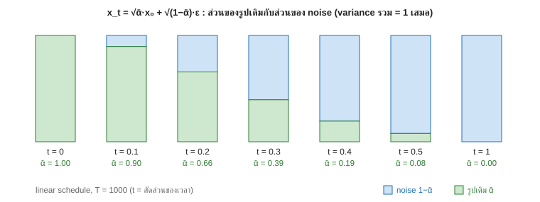
แท่งแต่ละแท่งสูงเท่ากัน (variance รวม 1) ส่วนสีเขียวคือ ᾱ ของรูปเดิม ส่วนสีฟ้าคือ noise เมื่อ t เพิ่ม สีเขียวหดและสีฟ้าโต ที่ t = 0.5 รูปเดิมเหลือแค่ 0.08 และที่ t = 1 เหลือเกือบ 0
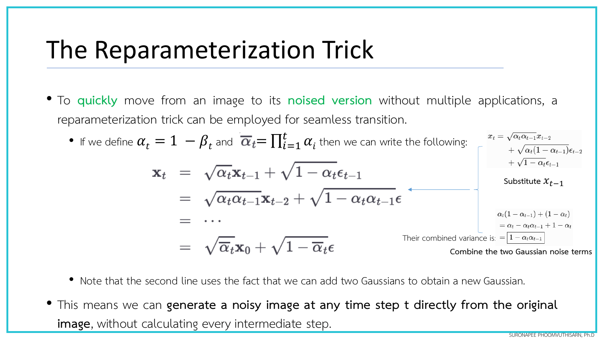
ผลที่ได้คือ สร้างรูปที่เติม noise ณ เวลา t ใดก็ได้จากรูปต้นฉบับโดยตรง ไม่ต้องคำนวณทุกขั้นกลาง ตอน train จึงสุ่ม t แล้วสร้าง \(x_t\) ได้ในบรรทัดเดียว
reparameterization trick ในบทนี้ต่างจาก Lesson 13 ใน VAE มันแยกความสุ่มออกเป็น ε เพื่อให้ gradient ไหลผ่าน μ และ σ ได้ ใน diffusion มันใช้รวม noise หลายขั้นเป็นก้อนเดียวเพื่อกระโดดจาก x₀ ไป x_t รูปสูตรคล้ายกัน (ค่าเฉลี่ย + ส่วนเบี่ยงเบน × ε) แต่ใช้ต่างจุดประสงค์
Diffusion schedule กำหนดว่า \(\beta_t\) (หรือ \(\alpha_t\)) เปลี่ยนอย่างไรในแต่ละขั้น จึงคุมว่ารูปเดิมเหลือเท่าใดและ noise เพิ่มเท่าใดในแต่ละเวลา แบบแรกคือ linear schedule จากงานต้นฉบับ (Ho et al., 2020) ที่ \(\beta_t\) เพิ่มเป็นเส้นตรง
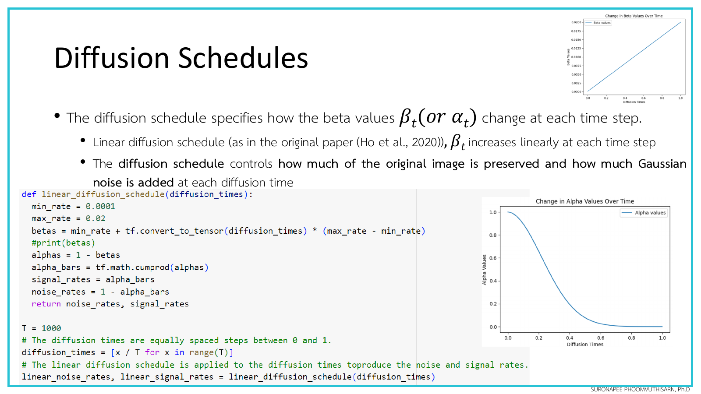
def linear_diffusion_schedule(diffusion_times):
min_rate = 0.0001
max_rate = 0.02
betas = min_rate + tf.convert_to_tensor(diffusion_times) * (max_rate - min_rate)
alphas = 1 - betas
alpha_bars = tf.math.cumprod(alphas)
signal_rates = alpha_bars
noise_rates = 1 - alpha_bars
return noise_rates, signal_rates
T = 1000
diffusion_times = [x / T for x in range(T)]diffusion_times = [x / T ...] | เวลาถูกปรับเป็นสัดส่วน 0 ถึง 1 แบ่ง 1000 ช่องเท่ากัน |
betas = min_rate + t·(max_rate − min_rate) | β เริ่ม 0.0001 แล้วเพิ่มเป็นเส้นตรงจนเกือบ 0.02 ที่ t = 1 |
alpha_bars = cumprod(alphas) | ผลคูณสะสมของ α คือ ᾱ ของทุกขั้น |
signal_rates = alpha_bars | บนสไลด์ไม่ได้ถอดราก ค่าที่คืนจึงเป็น variance (ᾱ และ 1 − ᾱ) ซึ่งเป็นค่าที่กราฟ Alpha Values แสดง |
ตัวคูณในสูตร x_t คือ √ᾱ และ √(1 − ᾱ) ไม่ใช่ ᾱ ใน notebook ของคาบ (ddim) signal_rates = cos(angle) และ noise_rates = sin(angle) จึงเป็นค่าที่ถอดรากแล้ว ยกกำลังสองรวมกันได้ 1 เสมอ และใช้ใน noisy = signal_rates * images + noise_rates * noises ได้ตรงๆ อ่านโค้ดให้ดูว่าตัวแปร "rate" เป็น variance หรือ standard deviation
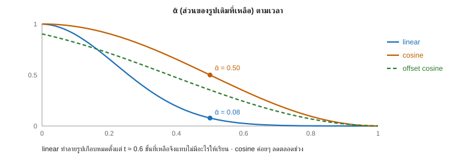
linear schedule ทำให้ ᾱ ตกเร็วมาก ที่ครึ่งทาง (t = 0.5) รูปเดิมเหลือ 0.08 และหลัง t ≈ 0.6 แทบเป็นศูนย์ ขั้นที่เหลือเกือบครึ่งจึงเป็น noise ล้วนที่ไม่มีอะไรให้เรียน cosine schedule ค่อยๆ ลดตลอดช่วง ที่ครึ่งทางยังเหลือ 0.50
| Schedule | ลักษณะ |
|---|---|
| Linear | β เพิ่มเป็นเส้นตรง (Ho et al., 2020) |
| Cosine แบบไม่มี offset | ᾱ ลดตามโค้ง cos² สูตรนี้ทำได้ดีกว่า linear |
| Cosine แบบมี offset และ scaling | เพิ่ม offset และ scaling เพื่อไม่ให้ขั้นเติม noise ช่วงต้นเล็กเกินไป ใน notebook ตั้ง signal rate สูงสุด 0.95 (ไม่ใช่ 1) และต่ำสุด 0.02 |
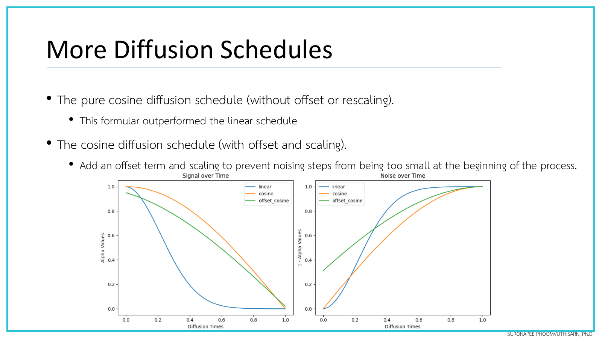
เส้น offset_cosine เริ่มที่ signal rate 0.95 และ noise rate ประมาณ 0.31 (√(1 − 0.95²) ≈ 0.312) แทนที่จะเริ่มจาก 1 และ 0 ทำให้แม้ขั้นแรกสุดก็มี noise ให้โมเดลเรียนทาย
ใน reverse diffusion process เป้าหมายคือสร้าง network p ที่ ย้อนกระบวนการเติม noise ได้ คือประมาณกระบวนการ q แบบย้อนกลับ ถ้าทำได้ ก็สุ่ม noise จาก normal มาตรฐานแล้วใช้ reverse process ซ้ำๆ ได้รูปใหม่ที่ไม่เคยมี
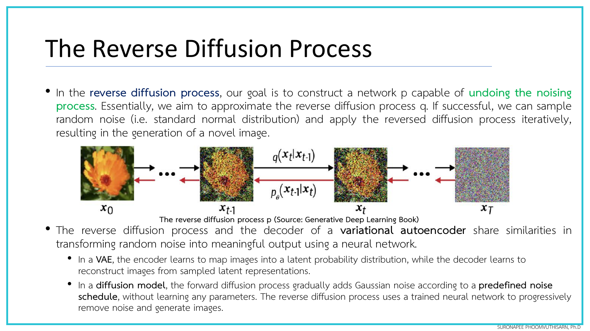
reverse diffusion คล้าย decoder ของ VAE ตรงที่ใช้ neural network เปลี่ยน noise สุ่มเป็นรูปที่มีความหมาย ต่างกันที่ฝั่ง "เข้ารหัส"
| VAE | Diffusion | |
|---|---|---|
| ฝั่งแปลงรูปเป็น noise | encoder เรียนรู้การแปลงรูปเป็นการแจกแจงใน latent | forward process เติม noise ตาม schedule ไม่มี parameter |
| ฝั่งแปลง noise เป็นรูป | decoder สร้างรูปจาก latent ในครั้งเดียว | network ที่ train แล้วลบ noise ทีละขั้นหลายรอบ |
ครูสอนวาดภาพด้วยการเอาภาพสวยมาแต้มจุดเลอะๆ แล้วถามนักเรียนว่า "จุดเลอะตรงไหนบ้าง" บางครั้งแต้มน้อย บางครั้งแต้มจนแทบไม่เห็นภาพ เฉลยมีอยู่แล้วเพราะครูเป็นคนแต้มเอง
reverse diffusion ค่อยๆ เอา noise ออกจากรูป โดย train neural network ให้ ทาย noise ที่อยู่ในรูป
| ช่วง | ทำอะไร |
|---|---|
| Training | เอารูปหนึ่งรูป สุ่มเวลา t แล้วเติม Gaussian noise ได้ \(x_t\) โมเดลรับ \(x_t\) และ t แล้วทาย noise ที่เติมไป loss (ปกติ MSE/L2) วัดความต่างระหว่าง noise ที่ทายกับ noise จริง |
| หลัง train (inference) | ใช้โมเดลประมาณ noise ในรูป noise ที่สุ่มขึ้น แล้วใช้ noise ที่ประมาณได้ทำให้รูปมี noise น้อยลงนิดหนึ่ง ทำซ้ำหลายขั้นจนได้รูปชัดจาก noise ล้วน |
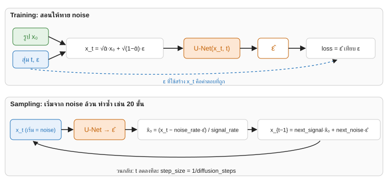
ตอน train ไม่ต้องไล่ทีละขั้น เพราะสูตรในตอน 2.3 สร้าง \(x_t\) ได้ทันที และ ε ที่ใช้สร้างคือเฉลย ตอน sampling ต้องวนจริงทีละขั้น เพราะไม่มีรูปเดิมให้ใช้
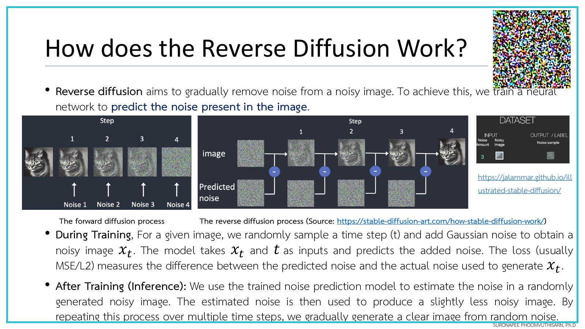
ฝั่ง reverse ในรูป แต่ละขั้นนำรูปปัจจุบันลบด้วย predicted noise ได้รูปแมวที่ชัดขึ้นทีละขั้นจาก step 1 ถึง step 4 ส่วนฝั่ง dataset แต่ละตัวอย่างคือคู่ (รูปที่มี noise, ปริมาณ noise) เป็น input และ noise ตัวอย่างเป็น label
network ทาย noise ไม่ได้ทายรูปสะอาดโดยตรง รูปสะอาดคำนวณย้อนจาก noise ที่ทายได้ (ตอน 5.1) และ input มีสองอย่างคือรูปที่มี noise กับเวลา t (ใน notebook คือ noise variance) ถ้าไม่บอก t โมเดลไม่รู้ว่าควรลบ noise มากแค่ไหน ใน notebook ของคาบใช้ loss เป็น mean absolute error ส่วนสไลด์บอกว่าปกติใช้ MSE/L2 ทั้งสองแบบวัดความต่างระหว่าง noise ที่ทายกับ noise จริงเหมือนกัน
U-Net ต่างจาก VAE ตรงที่มี skip connection ระหว่าง layer ที่มีขนาดเท่ากันในฝั่ง upsampling และ downsampling ข้อมูลจึงลัดข้าม network ได้ ไม่ต้องไหลเรียงต่อกันทุกชั้นแบบ VAE U-Net เหมาะเมื่อ output ต้องมี shape เท่ากับ input เช่นการทาย noise ที่ขนาดเท่ารูป จึงเป็น สถาปัตยกรรมที่นิยมใช้
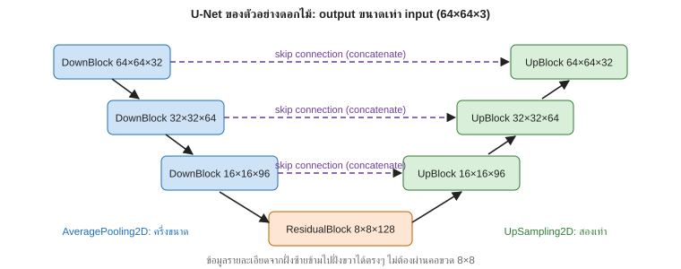
ฝั่งซ้ายย่อจาก 64×64 เป็น 32, 16 และ 8 พร้อมเพิ่ม channel เป็น 32, 64, 96 และ 128 ฝั่งขวาขยายกลับ ผลจาก DownBlock แต่ละระดับถูกส่งข้ามไป concatenate กับ UpBlock ระดับเดียวกัน รายละเอียดเล็กๆ ของรูปจึงไม่หายไปกับคอขวด 8×8
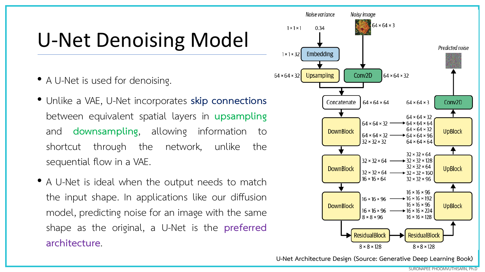
input มีสองทาง: รูปที่มี noise (64×64×3) ผ่าน Conv2D ได้ 64×64×32 และ noise variance (ค่าเดียว เช่น 0.34) ผ่าน embedding ได้ 1×1×32 แล้ว upsampling เป็น 64×64×32 นำทั้งสองมา concatenate ได้ 64×64×64 แล้วจึงเข้า DownBlock ชั้นสุดท้ายเป็น Conv2D ที่ให้ predicted noise 64×64×3 ขนาดเท่ารูปเดิม
ทั้ง DownBlock และ UpBlock มี ResidualBlock อยู่ข้างใน residual block ประกอบด้วย layer ที่มี skip connection บวก input เข้ากับ output แบบเดียวกับ ResNet ใน Lesson 8 ทำให้สร้าง network ที่ลึกขึ้นได้ ลดปัญหา vanishing gradient และ degradation
| Block | ทำอะไร |
|---|---|
| ResidualBlock | BatchNorm → Conv2D → Conv2D แล้วบวกกับ input ถ้าจำนวน channel ไม่เท่ากัน ให้ทางลัดผ่าน Conv2D 1×1 ก่อนบวก |
| DownBlock | ResidualBlock 2 ตัว (block_depth = 2) เพิ่มจำนวน channel แล้ว AveragePooling2D ลดขนาดครึ่งหนึ่ง ผลของแต่ละ ResidualBlock ถูกเก็บไว้ใช้เป็น skip connection |
| UpBlock | UpSampling2D ขยายขนาดสองเท่า แล้ว concatenate กับ skip จาก DownBlock และผ่าน ResidualBlock 2 ตัว ลดจำนวน channel |
skip connection ใน ResidualBlock ใช้ บวก (Add) ส่วน skip connection ข้ามฝั่งของ U-Net ใช้ ต่อกัน (Concatenate) ที่ UpBlock channel จึงเพิ่มชั่วคราว เช่น 16×16×128 ต่อกับ skip 16×16×96 ได้ 16×16×224 แล้ว ResidualBlock(96) ลดเหลือ 16×16×96 และ DownBlock ลดขนาดด้วย AveragePooling2D ไม่ใช่ stride
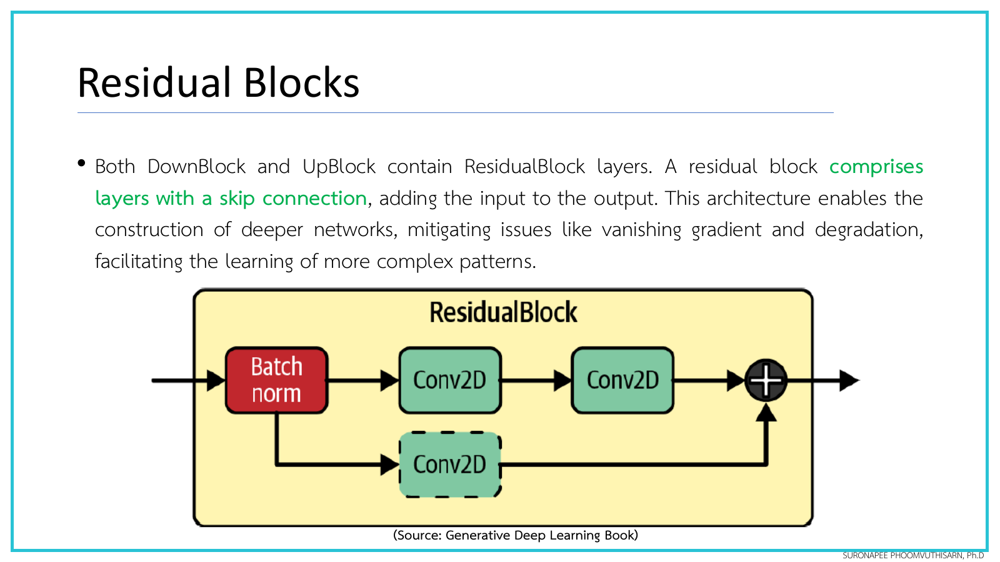
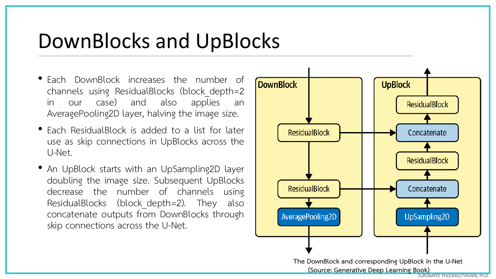
การ สุ่มรูปจากโมเดลที่ train แล้วคือการรัน reverse diffusion เริ่มจาก noise สุ่ม แล้วโมเดลค่อยๆ ลบ noise จนเห็นรูปดอกไม้ แต่ละขั้นมีสองจังหวะ
① ทาย noise แล้วถอดออกจาก x_t ได้รูปสะอาดที่ประมาณ ② ผสมรูปสะอาดกับ noise ที่ทายกลับเข้าไปใหม่ แต่ใช้สัดส่วนของเวลาที่ถอยหลังไปหนึ่งขั้น จึงได้รูปที่ noise น้อยกว่าเดิมนิดหนึ่ง
สมมติที่เวลานี้ signal_rate = 0.6 และ noise_rate = 0.8 รูป \(x_t\) มีพิกเซลหนึ่งเป็น 1.0 โมเดลทาย ε̂ = 0.5 จะได้ \(\hat x_0 = (1.0 − 0.8 × 0.5)/0.6 = 0.6/0.6 = 1.0\) ขั้นถัดไป signal 0.8 และ noise 0.6 จะได้ \(x_{t-1} = 0.8 × 1.0 + 0.6 × 0.5 = 1.1\) สัดส่วนของรูปเพิ่มจาก 0.6 เป็น 0.8
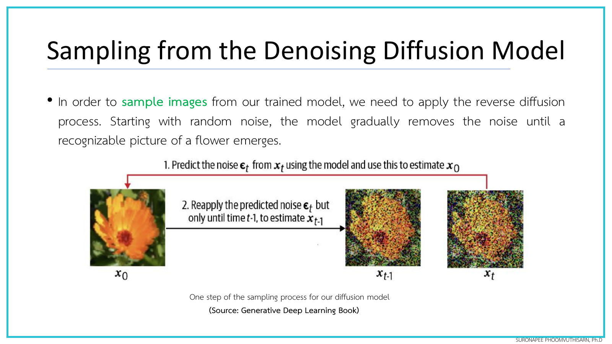
สูตร \(\hat x_0\) มาจากการย้ายข้างสูตร \(x_t=\text{signal}\cdot x_0+\text{noise}\cdot\varepsilon\) ใน notebook อยู่ในฟังก์ชัน denoise บรรทัด pred_images = (noisy_images - noise_rates * pred_noises) / signal_rates
ถึงจะได้ \(\hat x_0\) แล้วในขั้นแรก ก็ยังไม่หยุด เพราะการทายจาก noise ล้วนในขั้นเดียวยังหยาบ (ผลจากขั้นเดียวคือรูปเบลอ) จึงใส่ noise กลับบางส่วนแล้วทายใหม่ จำนวนขั้นมากขึ้น รูปละเอียดขึ้น
จำนวนขั้นเลือกได้ตามสมการของ Song et al. (2020) คือ DDIM ไม่ต้องเดินครบ 1000 ขั้นแบบตอน train ใช้ 20 ขั้นก็ได้
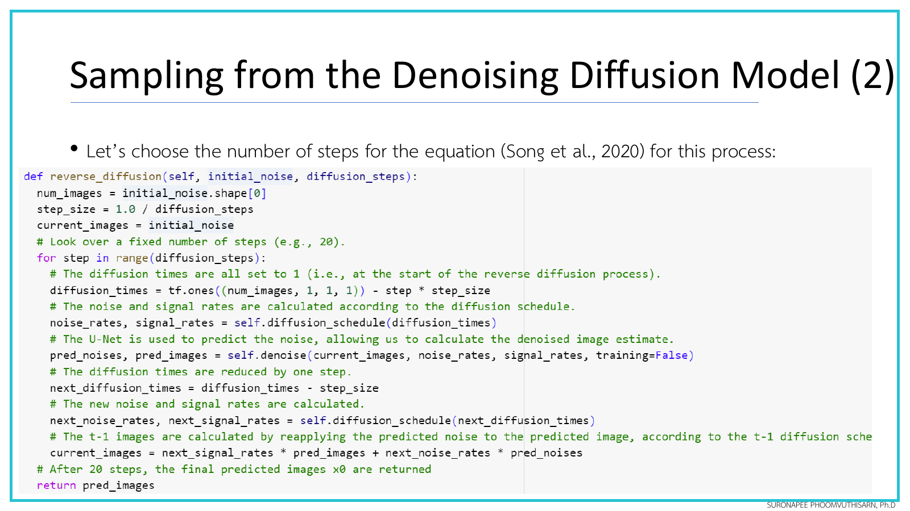
def reverse_diffusion(self, initial_noise, diffusion_steps):
num_images = initial_noise.shape[0]
step_size = 1.0 / diffusion_steps
current_images = initial_noise
for step in range(diffusion_steps):
diffusion_times = tf.ones((num_images, 1, 1, 1)) - step * step_size
noise_rates, signal_rates = self.diffusion_schedule(diffusion_times)
pred_noises, pred_images = self.denoise(current_images, noise_rates, signal_rates, training=False)
next_diffusion_times = diffusion_times - step_size
next_noise_rates, next_signal_rates = self.diffusion_schedule(next_diffusion_times)
current_images = next_signal_rates * pred_images + next_noise_rates * pred_noises
return pred_imagesstep_size = 1.0 / diffusion_steps | 20 ขั้น ได้ step_size = 0.05 |
diffusion_times = 1 − step·step_size | เริ่มที่เวลา 1 (noise ล้วน) แล้วลดลง 1, 0.95, 0.90, … |
self.denoise(..., training=False) | U-Net ทาย noise แล้วคืนทั้ง pred_noises และ pred_images (\(\hat x_0\)) |
current_images = next_signal·pred_images + next_noise·pred_noises | ผสมกลับด้วยสัดส่วนของเวลาถัดไป ได้รูปที่ noise น้อยลง |
return pred_images | หลังครบ 20 ขั้น คืน \(\hat x_0\) ตัวสุดท้าย |
การ สร้างรูปจากโมเดลที่ train แล้วคือรัน reverse diffusion แล้ว denormalize output ตอนท้าย คือนำค่าพิกเซลกลับไปอยู่ในช่วง [0, 1]
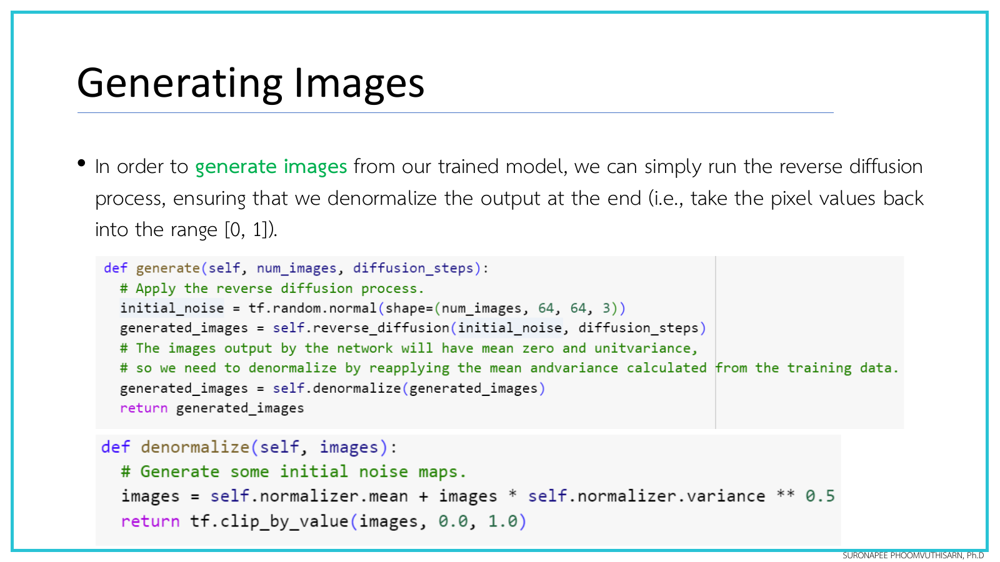
ใน generate noise เริ่มต้นมี shape (num_images, 64, 64, 3) เท่ารูปจริง และ denormalize คำนวณ mean + images * variance ** 0.5 ด้วย mean และ variance ของ training data แล้ว clip_by_value ให้อยู่ใน 0–1 ต้องทำเพราะตอน train รูปถูก normalize ให้มี mean 0 และ variance 1 เท่ากับ noise output ของ network จึงอยู่ในสเกลนั้น
ตัวอย่างนี้มีไว้ให้เห็นว่า noise loss ที่ลดลงตรงกับรูปที่ชัดขึ้น และจำนวนขั้น sampling มีผลต่อคุณภาพ
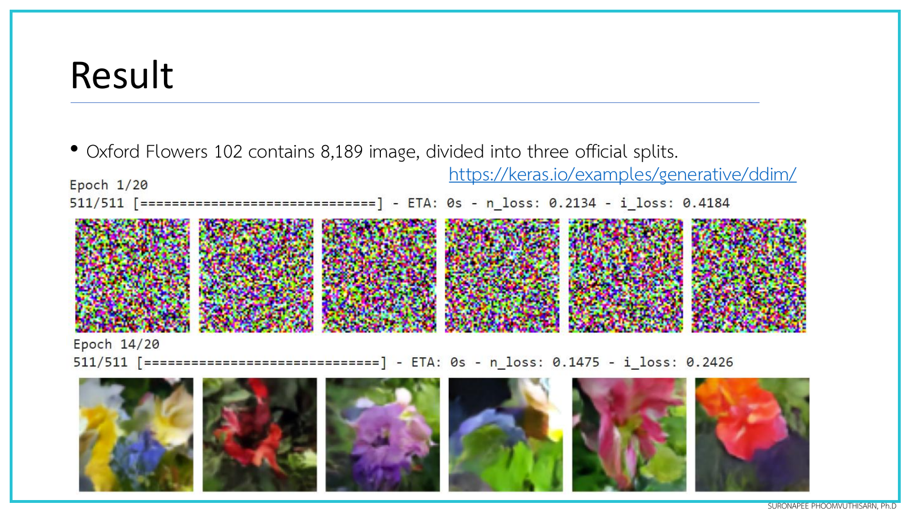
Oxford Flowers 102 มีรูปดอกไม้ 8,189 รูป หลัง epoch 1 n_loss (ทาย noise) = 0.2134 รูปที่สร้างยังเป็นจุดสีสุ่ม หลัง epoch 14 n_loss ลดเหลือ 0.1475 รูปเป็นดอกไม้สีต่างๆ ที่ดูออก (i_loss คือความต่างของรูปที่ประมาณได้กับรูปจริง ใช้ดูเฉยๆ ไม่ได้ใช้ train)
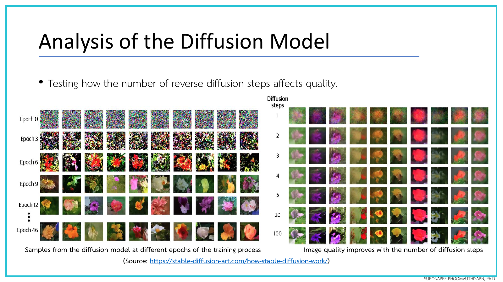
ด้าน epoch รูปเริ่มจาก noise ที่ epoch 0 แล้วเริ่มมีสีของดอกไม้ราว epoch 6 และเป็นดอกไม้ชัดเมื่อเกิน epoch 12 ด้านจำนวน diffusion step การ sampling ขั้นเดียวได้แค่ก้อนสีเบลอ ส่วน 20 หรือ 100 ขั้นได้กลีบและรายละเอียดชัด
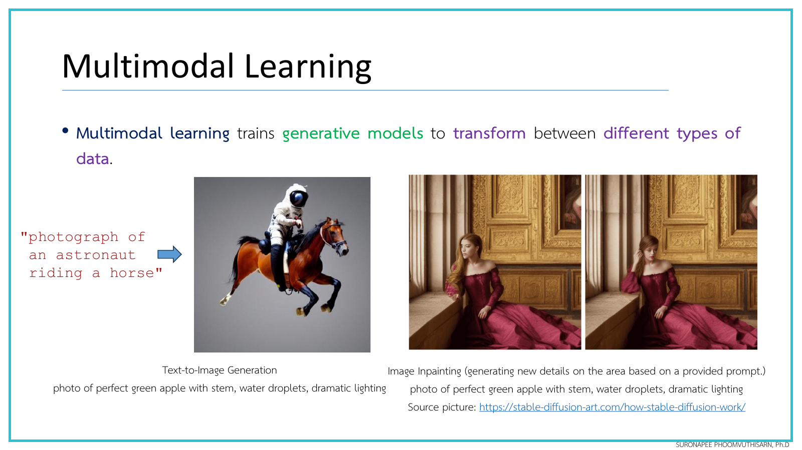
Multimodal learning ฝึก generative model ให้ แปลงระหว่าง ข้อมูลต่างชนิดกัน เช่นป้อนข้อความ "photograph of an astronaut riding a horse" แล้วได้รูปนักบินอวกาศขี่ม้า หรือ image inpainting ที่สร้างรายละเอียดใหม่เฉพาะส่วนที่เลือกตามข้อความ
Text-to-image generation มุ่งสร้าง รูป จาก ข้อความ prompt ที่ให้มา ต้องทั้งเข้าใจความหมายของ prompt และสร้างรูปที่สมจริงและตรงกับเนื้อหา ความท้าทายหลักคือทำให้ข้อมูลข้อความกับรูปสอดคล้องกัน (align) โมเดลตัวอย่างคือ DALL·E 2, Imagen, Stable Diffusion และโมเดลใหม่อย่าง DALL·E 3 และ FLUX
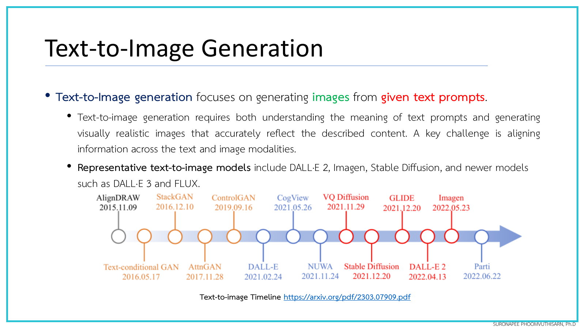
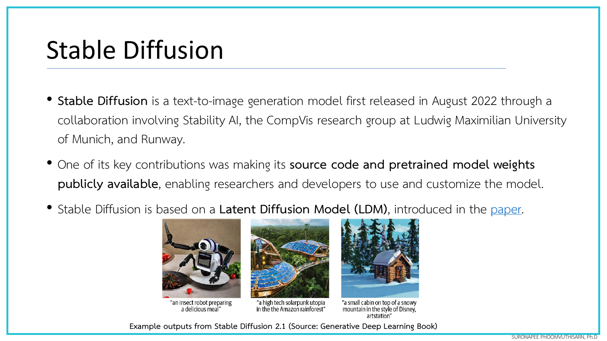
Stable Diffusion เป็นโมเดล text-to-image ที่ปล่อยครั้งแรกในเดือนสิงหาคม 2022 โดย Stability AI ร่วมกับกลุ่ม CompVis ของ LMU Munich และ Runway จุดสำคัญคือ เปิด source code และ weight ของโมเดลที่ train แล้ว ให้ทุกคนใช้และปรับแต่งได้ และสร้างบน Latent Diffusion Model (LDM) จาก งานวิจัยหนึ่ง
ร่างภาพบนกระดาษโน้ตแผ่นเล็กก่อน แก้จนพอใจแล้วค่อยขยายลงผ้าใบใหญ่ เร็วกว่าการลบแก้บนผ้าใบใหญ่ตั้งแต่แรก
diffusion แบบเดิมทำงานบน pixel โดยตรง ซึ่งแพงมากเมื่อรูปความละเอียดสูง Latent Diffusion Model ทำ diffusion ใน latent space ที่มีมิติต่ำกว่า: encoder บีบรูปเป็น latent ก่อน diffusion ทั้งหมดเกิดในนั้น แล้ว decoder แปลง latent ที่ลบ noise แล้วกลับเป็นรูป
รูป RGB ขนาด 512 × 512 มี 512 × 512 × 3 = 786,432 ค่า latent ขนาด 64 × 64 × 4 มี 16,384 ค่า น้อยกว่า 48 เท่า U-Net ต้องประมวลผลข้อมูลน้อยลง 48 เท่าในทุกขั้น denoise
สถาปัตยกรรมของ Stable Diffusion ห่อ diffusion model ไว้ใน VAE autoencoder VAE ดูแลการ encode รายละเอียดของรูปเป็น latent และ decode กลับเป็นรูปความละเอียดสูง diffusion จึง ทำงานเฉพาะใน latent ซึ่งเป็นพื้นที่ของแนวคิด ทำให้ U-Net ที่ลบ noise ยัง มีขนาดเล็ก เมื่อเทียบกับ U-Net ที่ทำงานบนรูปเต็ม train เร็วขึ้นและทำงานดีขึ้น
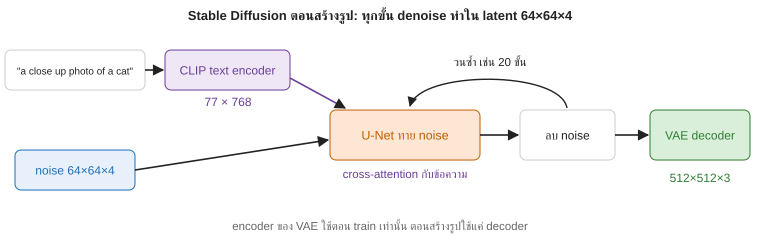
ข้อความผ่าน CLIP text encoder ได้ embedding 77 × 768 ส่วน noise 64×64×4 วนผ่าน U-Net ที่ทาย noise โดยดูข้อความผ่าน cross-attention แล้วลบ noise ซ้ำหลายขั้น สุดท้าย VAE decoder ขยาย latent เป็นรูป 512×512×3
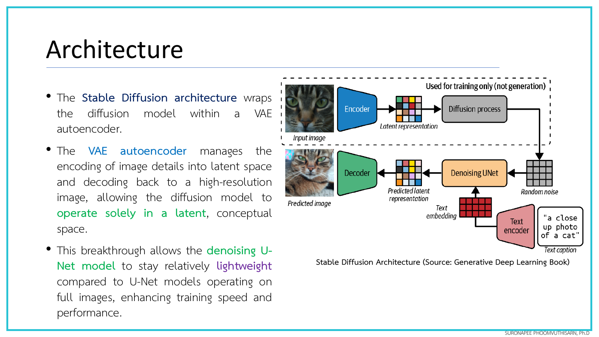
กรอบ "Used for training only" ครอบ encoder และ diffusion process เพราะตอนสร้างรูปไม่มีรูปจริงให้ encode เริ่มจาก random noise ใน latent แล้ว denoising U-Net ทำงานร่วมกับ text embedding จาก text encoder
| ส่วนของ VAE autoencoder | ตอน train | ตอนสร้างรูป |
|---|---|---|
| Encoder | แปลงรูป 512×512×3 เป็น latent 64×64×4 เพื่อเติม noise และส่งให้ U-Net | ไม่ใช้ |
| Decoder | - | แปลง latent ที่ลบ noise แล้วกลับเป็นรูป |
forward และ reverse diffusion ทั้งหมดที่เรียนมาจริงๆ แล้วเกิดใน latent space ซึ่ง ลดหน่วยความจำที่ต้องใช้ ลงมาก
ข้อสอบชอบถามว่าตอน inference ใช้ส่วนไหนของ VAE คำตอบคือ decoder อย่างเดียว encoder ใช้เฉพาะตอน train (และงานที่เริ่มจากรูปจริง เช่น inpainting) และ latent ของ Stable Diffusion มี 4 channel ไม่ใช่ 3
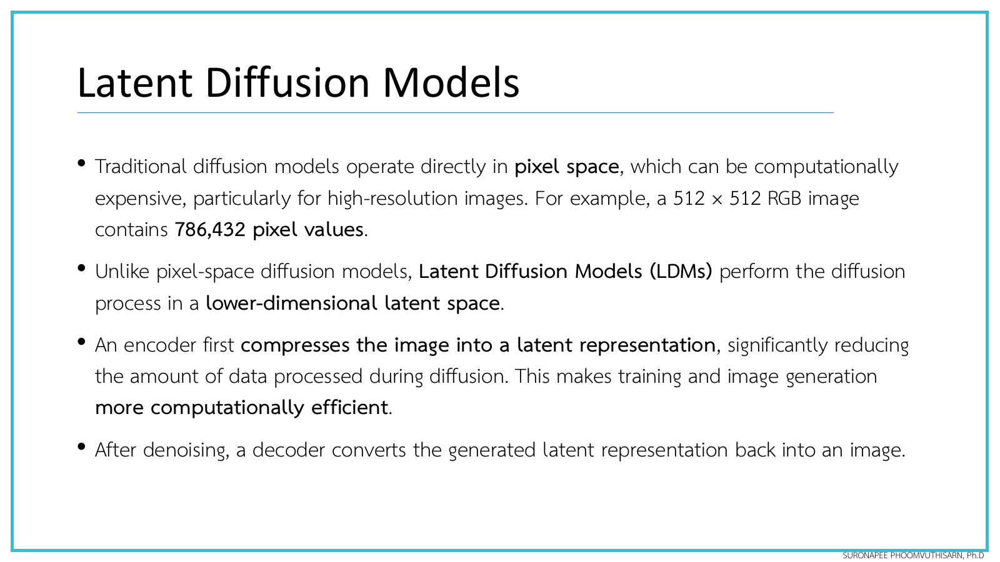
หน้านี้ให้ตัวเลข 786,432 ค่าของรูป 512 × 512 RGB เพื่อให้เห็นว่าทำ diffusion บน pixel แพงแค่ไหน การบีบเป็น latent ช่วยทั้งตอน train และตอนสร้างรูป
| ขั้น | ทำอะไร | shape |
|---|---|---|
| 1 | สุ่ม tensor ใน latent space | 64×64×4 |
| 2 | U-Net ที่ทาย noise รับ latent ที่มี noise และ text prompt แล้วทาย noise ใน latent | 64×64×4 |
| 3 | ลบ noise ที่ทายออกจาก latent ได้ latent ใหม่ ทำขั้น 2–3 ซ้ำตามจำนวน sampling step เช่น 20 ครั้ง | 64×64×4 |
| 4 | VAE decoder แปลง latent กลับเป็น pixel ได้รูปสุดท้าย | 512×512×3 |
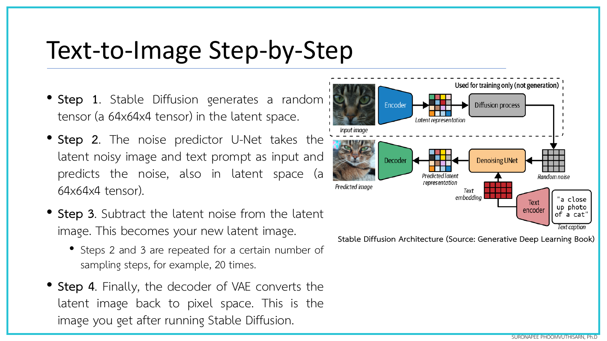
ทุกขั้นที่วนซ้ำอยู่ใน latent 64×64×4 มีแค่ขั้นสุดท้ายที่ออกไปเป็น pixel
Text encoder แปลง prompt เป็น embedding ที่ใช้เป็น ตัวชี้นำ latent ที่มี noise ระหว่างที่ U-Net ฝึกลบ noise ปกติใช้ encoder แบบ transformer อย่างง่าย Stable Diffusion ใช้ text encoder ที่ train ไว้แล้ว ไม่ได้ train ใหม่
| รายละเอียด | |
|---|---|
| Input | prompt ที่ถูก tokenize เป็นลำดับไม่เกิน 77 token (รวม special token และ padding) |
| Output | embedding ของแต่ละ token ตามบริบท Stable Diffusion 1.x ได้ shape 77 × 768 |
| โมเดลที่ใช้ | SD 1.x ใช้ text encoder ของ CLIP จาก OpenAI ส่วน SD 2.x ใช้ OpenCLIP ที่ train แยก |
จับคู่รูปกับคำบรรยายในอัลบั้มที่สลับกันมั่ว ถ้าทำมาเป็นร้อยล้านคู่ ก็จะเข้าใจทั้งความหมายของคำและเนื้อหาของรูป จนวัดได้ว่าคำบรรยายไหนเข้ากับรูปไหน
CLIP train จากคู่ข้อความกับรูป 400 ล้านคู่ที่เก็บจากอินเทอร์เน็ต ฝึกสอง network คือ text encoder ที่แปลงข้อความเป็น text embedding และ image encoder ที่แปลงรูปเป็น image embedding ใน batch หนึ่ง CLIP เทียบทุกคู่ของ embedding ข้อความกับรูปด้วย cosine similarity แล้วปรับให้คะแนนของคู่ที่ตรงกันสูงสุด และของคู่ที่ไม่ตรงกันต่ำสุด
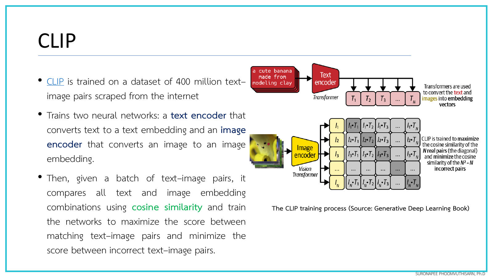
batch มี 4 คู่ ตาราง cosine similarity มี 4 × 4 = 16 ช่อง ช่องบนเส้นทแยง (I₁·T₁, I₂·T₂, …) 4 ช่องเป็นคู่ที่ตรงกันและถูกดันให้สูง อีก 16 − 4 = 12 ช่องเป็นคู่ที่ไม่ตรงกันและถูกดันให้ต่ำ
ตัวอย่างนี้มีไว้ให้เห็นว่า CLIP เข้าใจเนื้อหามากกว่าโมเดลที่ฝึกจำแนก label อย่างเดียว
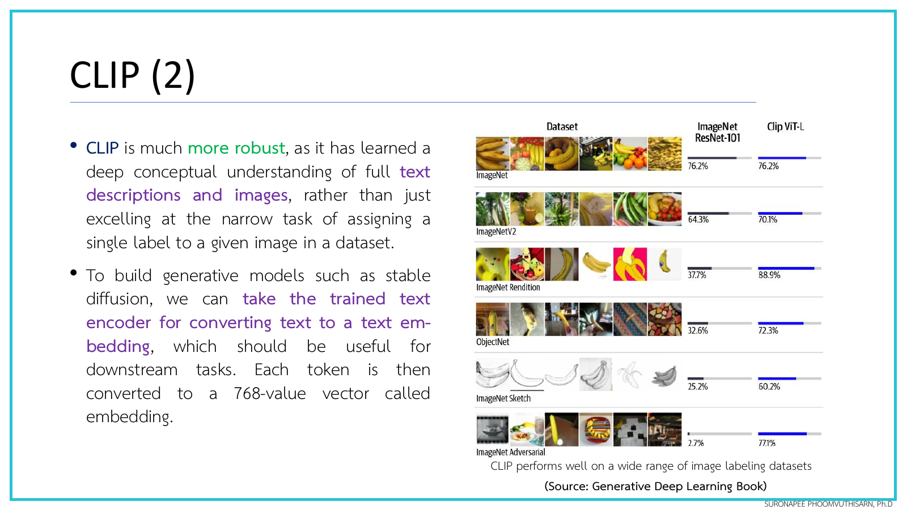
บน ImageNet ทั้ง ResNet-101 และ CLIP ViT-L ได้ 76.2% เท่ากัน แต่บน ImageNet Adversarial ResNet เหลือ 2.7% ขณะที่ CLIP ได้ 77.1% CLIP ทนทานกว่ามาก เพราะเรียนความเข้าใจเชิงแนวคิดของ คำบรรยายและรูปทั้งชุด ไม่ได้เก่งแค่การติด label เดียวให้รูป เมื่อสร้างโมเดลอย่าง Stable Diffusion จึง นำ text encoder ที่ train แล้วมาแปลงข้อความเป็น text embedding แต่ละ token กลายเป็น vector ขนาด 768
U-Net ของ Stable Diffusion ทาย noise ใน latent ระหว่าง reverse diffusion โดยมี text prompt คอยชี้นำ
| รายละเอียด | |
|---|---|
| Input | latent ที่มี noise, เวลา t ของ diffusion และ text embedding จาก text encoder |
| Output | noise ที่ทายใน latent ใช้ลบ noise ทีละขั้น |
| สถาปัตยกรรม | ทาง downsampling (ลดขนาด ดึง feature) คอขวด และทาง upsampling (ขยายกลับ ใช้ skip connection) มีทั้ง ResNet block และ attention |
Output ของ text transformer ถูกใช้ หลายครั้ง โดย ตัวทาย noise ทั่วทั้ง U-Net ผ่านกลไก cross-attention ตรงนี้คือจุดที่ prompt พบกับรูป
สูตรเดียวกับ attention ใน Lesson 11 ต่างแค่ที่มา: คำถาม (Q) มาจากแต่ละตำแหน่งของรูป ส่วนกุญแจ (K) และเนื้อหา (V) มาจากคำใน prompt แต่ละตำแหน่งของรูปจึงเลือกได้ว่าจะฟังคำไหน
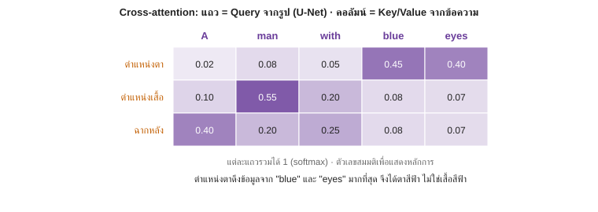
ตัวเลขเป็นค่าสมมติเพื่อแสดงหลักการ แถวของตำแหน่งตาให้น้ำหนักกับ "blue" และ "eyes" รวมกัน 0.85 แถวของตำแหน่งเสื้อให้น้ำหนัก "blue" แค่ 0.08 สีฟ้าจึงไปอยู่ที่ตา ไม่ใช่ที่เสื้อ
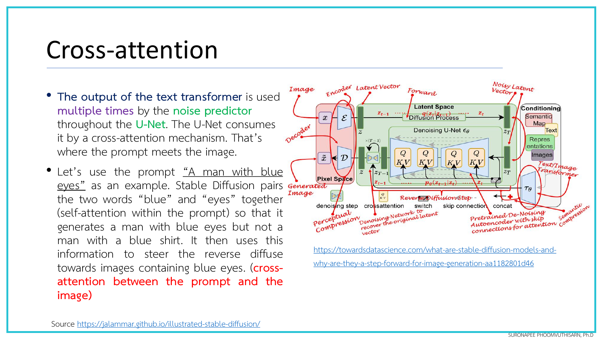
สไลด์หน้า 35 ยกตัวอย่าง prompt "A man with blue eyes" มีสองกลไกทำงานต่อกัน
| กลไก | Q มาจาก | K, V มาจาก | ทำอะไร |
|---|---|---|---|
| Self-attention ใน text encoder | ข้อความ | ข้อความ | จับคู่ "blue" กับ "eyes" ให้รู้ว่าสีฟ้าเป็นของตา |
| Cross-attention ใน U-Net | feature ของรูป | text embedding | ให้ตำแหน่งตาในรูปดึงข้อมูลจาก "blue" และ "eyes" จึงสร้างชายตาสีฟ้า ไม่ใช่ใส่เสื้อสีฟ้า (cross-attention ระหว่าง prompt กับรูป) |
ใน cross-attention ของ Stable Diffusion Query มาจากรูป และ Key กับ Value มาจากข้อความ ถ้าสลับกัน (Q จากข้อความ) output จะมีขนาดตามจำนวน token ไม่ใช่ตามตำแหน่งในรูป U-Net จะเอาไปใช้ทาย noise ทุกพิกเซลไม่ได้
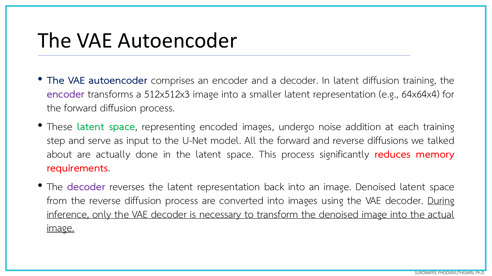
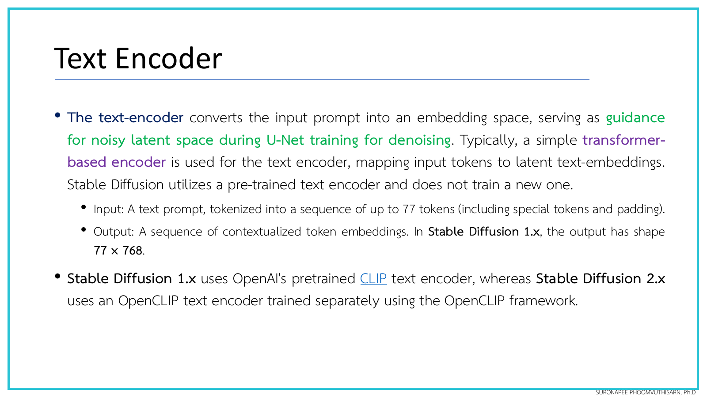
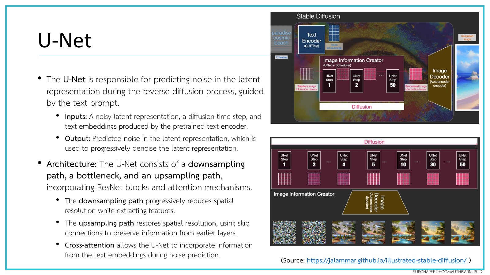
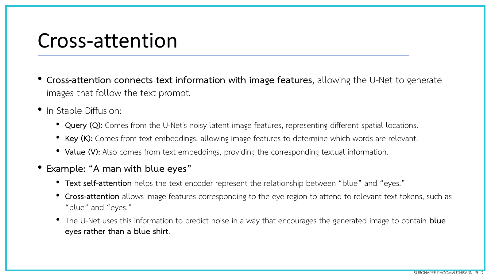
ลองฝึกต่อในแบบฝึก Lesson 14 หรืออ่านต่อ Lesson 15 — Agentic AI
| หน้า | เนื้อหา | อยู่ในตอน |
|---|---|---|
| 1 | ปก part5: Generative Models (CON’t) | etc — ปก |
| 2–4 | Agenda, Diffusion Models, DDM | ตอน 1 |
| 5–12 | Forward diffusion, derive step by step, summary, reparameterization trick, schedules | ตอน 2 |
| 13–14 | Reverse diffusion, การ train ให้ทาย noise | ตอน 3 |
| 15–17 | U-Net, Residual Blocks, DownBlocks และ UpBlocks | ตอน 4 |
| 18–22 | Sampling, reverse_diffusion, generate, Result, Analysis | ตอน 5 |
| 23 | Agenda (ครึ่งหลัง) | ตอน 1 (แกลเลอรี) |
| 24–36 | Multimodal, Text-to-Image, Stable Diffusion, LDM, Architecture, Step-by-Step, VAE, Text Encoder, CLIP, U-Net, Cross-attention | ตอน 6 |
| 37 | Try.. ลิงก์ keras.io สำหรับลอง Stable Diffusion | etc — ลิงก์อ้างอิงอย่างเดียว |
แหล่งอื่นที่ใช้: notebook ของคาบ ddim.ipynb เฉพาะส่วนที่สไลด์อ้างถึง (diffusion_schedule แบบ offset cosine ที่ min/max signal rate 0.02/0.95, ฟังก์ชัน denoise และ loss mean absolute error) ค่า ᾱ ของ linear schedule และ variance ในรูปที่วาดคำนวณซ้ำด้วย Python